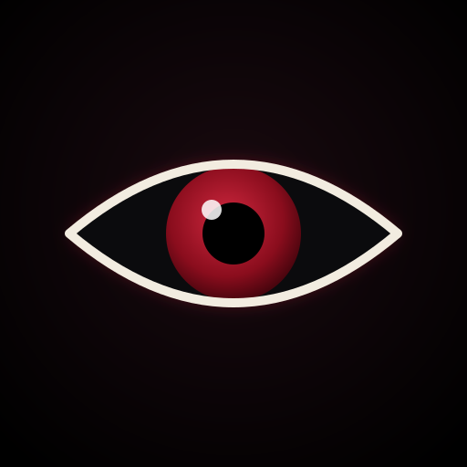

Occhio Aperto
Versione per Windows
Scarica per Windows (.zip)Consigliato · Windows 10 e 11, 64 bit
⬇
Versione portatile (.exe)Un solo file, nessuna installazione · avvio più lento
⬇
Come si avvia
- Estrai lo zip in una cartella.
- Avvia Occhio Aperto.exe. Parte a schermo intero (F11 per la finestra).
- Se Windows mostra «Windows ha protetto il PC»: Ulteriori informazioni → Esegui comunque. Succede perché il gioco non è firmato digitalmente.
Da sapere
Funziona anche offline. Con internet, la chat della diretta si riempie con i nomi di chi ha giocato prima di te.Preferisci non scaricare nulla? Gioca nel browser.